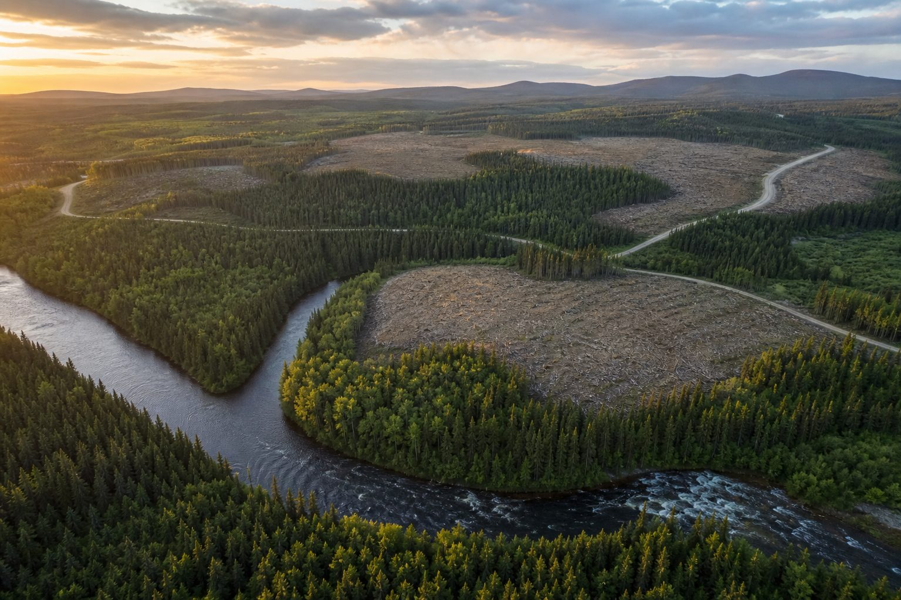

The scene plays out in nearly every forestry organization. An engineer prepares her layers in a GIS, exports a shapefile, attaches it to an email and sends it to the crew. Someone edits it and sends it back. Someone else is still running last week's version on their tablet. Three days later, four files of the same block are floating around, and nobody knows which one is authoritative.
This is not a mapping-software problem. It is a data-circulation problem. And it is one of the quietest sources of waste in the business.
At G.A. Logix, we have been building forestry software in Quebec for years. We have seen this mess up close, on real worksites. This article explains a concrete way out of it: the online map layer, shared and editable, from the office to the field.
The real cost of the emailed shapefile
The emailed file has a birth defect: the moment it leaves your computer, it becomes a copy. And copies multiply.
And email is not even the worst of it: in much of the forestry world, maps still travel on a USB stick passed from hand to hand, from the office to the truck.
Here is what that produces in real life:
- Conflicting versions. Three files of the same block, three different areas, no simple way to tell which one is right.
- Field errors. A crew working on an outdated block because the correct layer stayed in an email inbox at the office.
- Wasted coordination time. Calls to confirm which map is the right one, files going back and forth, exports redone.
- A blurry trail. When data travels as attachments, it is hard to know who changed what, and when.
None of this friction shows up clearly in an end-of-season report. But added up, it is the difference between an operation that runs smoothly and one that stalls.
The alternative: a layer that lives online
The idea is simple. Instead of shipping a file around, you publish your map layer online, in one place, and everyone consults it.
Concretely, the engineer prepares her project in her GIS (QGIS, ArcMap or ArcGIS Pro): she sets the symbology, the layer order, the visibility. Then, in a few clicks, she publishes it all online. The layer becomes accessible, shared and up to date, from the office to the field.
What changes:
- A single source of truth. There is no longer Marie's version and the previous version. There is the layer, up to date.
- Data you can consult anywhere. A layer published to open standards can be consumed from any compatible client: another GIS, a web browser, the field application.
- Symbology preserved. The order, visibility and appearance of the layers are kept from office to field, not just the raw geometry.
One important point, to stay honest: this is not a magic cloud that reads your mind. When you update your layer, you republish it, and that is the up-to-date version your crew sees. The goal is not magic, it is the end of phantom versions.
Office and field on the same map
The strength of this approach is that it closes the loop between the office and the bush.
The office prepares and maintains the layer. The field consults it on the application (ForestLogix on the cab tablet, MobileLogix on the phone) and works on it. Everyone looks at the same up-to-date map, instead of syncing files by hand.
For the field crew, it means no longer wondering whether the displayed block is the right one. For the office, it means no longer playing the role of a human file server, resending the correct version to every person who asks for it again.

Open standards, not a prison
There is one question a manager should always ask before adopting a tool: if I change my mind in two years, is my data trapped?
With this approach, the answer is no. The layers are published to open protocols and standard formats (such as GeoJSON). Your data is not locked into a proprietary format. It stays portable, readable by the major tools on the market, and yours.
This choice is not cosmetic. It protects your organization from dependence on a single vendor. And it lets you connect the layer to what you already use.
| Approach | Data circulation | Authoritative version | Portability |
|---|---|---|---|
| Emailed shapefile | Attachments that copy themselves | Uncertain (multiple versions) | Good, but every copy diverges |
| Shared online layer | A single access point | One, up to date | Open standards, no lock-in |
"Shapefile," really? What actually runs underneath
A note for the GIS specialists reading this: the goal is not to share shapefiles online, it is to get out of the shapefile as a coordination method. What we serve online is a living vector layer, through open mapping services, viewable and editable from QGIS, ArcGIS or a web browser.
It is the same service logic as modern approaches: a shared spatial database such as PostGIS, or the recent formats that replace the old multi-file .shp (GeoPackage, GeoParquet, GeoJSON). The format is not the point. The point is a single source of truth, served online, all the way to the field, for crews who are not GIS specialists. That is where the real challenge lies, and that is where we put our energy.
What if you do not want to run a server?
Publishing a layer online implies somewhere to host it. Not every organization wants to set up and administer its own infrastructure.
That is why a hosting service exists on the G.A. Logix side: you can publish your layers online, synchronized from your GIS, without managing the server yourself. The exact terms are worked out to fit your needs, something we discuss during the demo.
The point is that the technical barrier should not become an excuse to stay stuck in the attachment workflow.
The same logic across your three GIS platforms
A detail that matters for mixed teams: this publishing capability exists across the three GIS environments G.A. Logix supports, namely QGIS, ArcMap and ArcGIS Pro. A large share of the code is shared across these platforms, which means a consistent experience whether your people are on open-source software or on the Esri suite.
In other words, you do not have to standardize your entire GIS fleet to benefit from the shared online layer. Everyone works with the tool they know, and the layer stays common.
Where to start
If the emailed shapefile is still your default coordination method, here is a simple way to begin the shift:
- Subscribe to the G.A. Logix services to enable online layer publishing and hosting.
- Pick a pilot worksite, not the whole organization at once.
- Prepare its layer cleanly in your GIS (symbology, order, visibility).
- Publish it online and give the field crew access.
- Watch for a week or two: how many "which version is it?" calls did you cut?
That is often where it clicks. Once a crew tastes one map for everyone, going back to attachments becomes hard to defend.
In short
The shapefile is not dead, and this is not about demonizing it. It is about no longer shipping it around by email to coordinate a crew. An online map layer, shared and editable, published from your GIS and consulted all the way to the field, solves a mundane but costly problem: the wrong version.
At G.A. Logix, we build these tools in Quebec, for local forestry professionals, on public and private land alike. If you want to see what your next worksite map would look like when it lives online instead of traveling by email, request your free demo by contacting us.